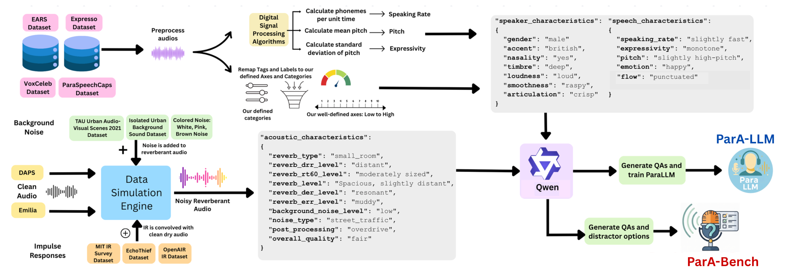
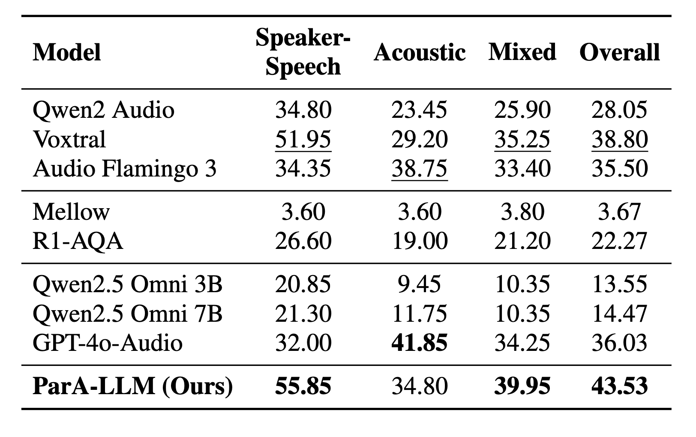
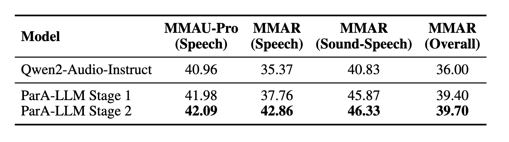
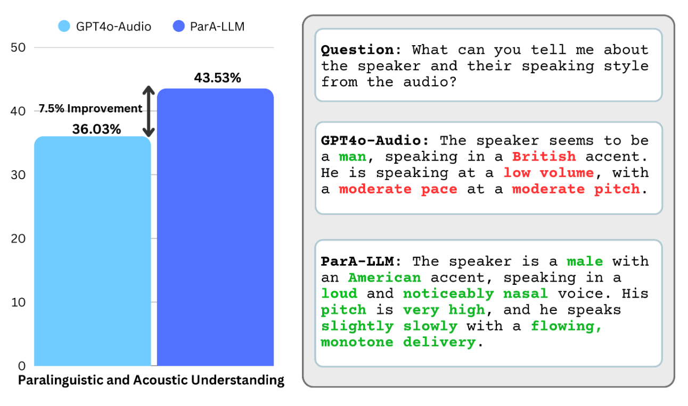

While modern Audio Large Language Models (LLMs) are increasingly strong at speech content (what is said), they still lag in paralinguistic and acoustic understanding — how something is said: speaker traits, expressive style, and recording conditions. Human listeners achieve far higher agreement on these dimensions than current frontier systems.
We present ParA-LLM, a unified framework for paralinguistic and acoustic speech understanding built on a taxonomy of 22 characteristics and a large dataset of 1.2M+ audio–question answering pairs spanning acoustic, speaker, and speech properties. Training uses a two-stage curriculum — first on atomic single-attribute questions, then on multi-attribute questions to encourage joint reasoning.
We introduce ParA-Bench (6,000 MCQ items across speaker–speech, acoustic, and mixed categories), on which frontier systems such as GPT-4o-Audio reach about 36% overall accuracy, while ParA-LLM outperforms prior audio LLMs by 7.5% on ParA-Bench, with additional gains of +1.15% on MMAU-Pro (Speech) and +7.49% on MMAR (Speech) after curriculum training. A release of ParA-Bench, the model, and the dataset is stated in the paper.
Over 1.2M annotated audio–QA pairs with coverage across 22 paralinguistic and acoustic attributes (10 acoustic, 7 speaker, 5 speech).
An audio LLM supporting free-form joint QA over multiple attributes, trained with atomic then multi-attribute curriculum.
6,000 multiple-choice questions (2,000 each: speaker–speech, acoustic, mixed) with model-generated distractors for broad coverage.
Data simulation, annotation, QA generation, model training, and ParA-Bench construction — mirroring Figure 2 in the paper.

Data sources (EARS, Expresso, VoxCeleb, and others), simulation with TAU Urban / MIT IR / OpenAIR, characteristic extraction, metadata JSON, and ParA-LLM + ParA-Bench outputs.
Clean speech from EARS, Emilia, Expresso, VoxCeleb, and related corpora is augmented with room impulse responses, colored and recorded noise at varied SNR, and post effects (e.g. clipping, compression) to form realistic, reverberant, and noisy training audio.
Stage 1 uses ~688K atomic single-attribute QA pairs. Stage 2 adds ~513K multi-attribute pairs (via Qwen2.5-7B ICL) for compositional reasoning. ParA-LLM is finetuned from Qwen2-Audio-7B-Instruct with LoRA (rank 128, α 256) as reported in the paper.
ParA-LLM leads on ParA-Bench and benefits from the two-stage curriculum on downstream audio benchmarks.
≈7.5 percentage points absolute gain on overall ParA-Bench accuracy (paper Figure 1).

Speaker–speech, acoustic, mixed, and overall columns — ParA-LLM (Ours) attains 55.85 / 34.80 / 39.95 / 43.53 in the published table.

Stage 2 yields a large relative gain on MMAR (Speech) over the Qwen2-Audio baseline (e.g. +7.49 absolute, paper).
Comparing free-form paralinguistic description: GPT-4o-Audio vs. ParA-LLM (paper Figure 1, right panel).

Prone to concrete mistakes on the paper’s example (e.g. wrong accent, undershooting loudness) — errors highlighted in red in the PDF.
Aligns better with the annotated attributes, including gender, accent, nasality, pitch, rate, and delivery (paper highlights in green).
Data annotation & captioning — Perceptual metadata and descriptive captions for speech corpora and retrieval.
Speech synthesis control — Attribute estimates (articulation, timbre, emotion) as structured control signals for TTS.
Text-to-impulse-response (e.g. Gencho) — Natural language descriptions of acoustic spaces to supervise or condition IR generation (see paper and reference [35]).
Update venue, year, and authors for the camera-ready version. Replace the GitHub/URL with your public materials.
@inproceedings{anonymous2026parallm,
title = {ParA-LLM: A Unified Approach to Paralinguistic and Acoustic Speech Understanding},
author = {Anonymous},
booktitle = {Proc. Interspeech},
year = {2026},
note = {Under review / anonymous submission; update when published}
}